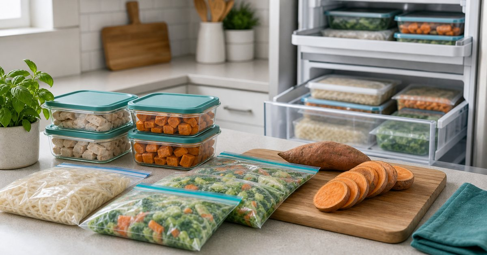

Elite Fashion｜不想每天煮飯的冷凍庫清單：舒肥雞胸、地瓜、冷凍蔬菜與料理包
忙碌工作日不一定要每天現煮。先把冷凍庫分成主食、蛋白質、蔬菜與備用料理，晚餐和午餐才不會每次都重新開始。

冷凍庫要先分角色，不是先分品牌
冷凍庫整理的第一步，是把食材分成主食、蛋白質、蔬菜、湯麵與臨時備案。每一格都知道用途，晚餐才不會又回到外送選擇題。
可以把 田食原、小嚼士、老饕廚房、呷什麵、KKM 與 GUMi 低碳 放在同一張選擇表裡，但不要只看品牌名或包裝。編輯部會先看它們各自適合的位置：日常補給、待客分享、送禮、備餐、移動攜帶或辦公室共用，再決定哪些值得放進購物清單。
比較實用的順序是先確認 你最常卡住的是主食、配菜、蛋白質還是完整一餐。常見失誤是 買了很多看似方便的食品，卻沒有組成一餐的邏輯；在 下班晚歸、居家工作午餐與週末預先備餐 裡，選擇能被穩定使用的品項，通常比一次買齊更重要。
- 先補最常缺的那一格，不必一次補滿。
- 每格只放 2 到 3 種常用選項，避免冷凍庫失控。
地瓜與主食負責穩定，不必每次都重煮
主食是冷凍庫最容易被忽略的一層。冰烤地瓜、麵食或可快速搭配的穀物，都能讓一餐有基本結構，但仍要看保存與加熱方式是否適合自己的日程。
可以把 田食原、呷什麵、KKM 與 GUMi 低碳 放在同一張選擇表裡，但不要只看品牌名或包裝。編輯部會先看它們各自適合的位置：日常補給、待客分享、送禮、備餐、移動攜帶或辦公室共用，再決定哪些值得放進購物清單。
比較實用的順序是先確認 份量是否容易單次取用、加熱是否簡單、是否適合搭配常備菜。常見失誤是 只囤主食卻沒有配菜或蛋白質，最後還是覺得吃不成一餐；在 忙碌午餐、晚間簡單料理與週末外出前的快速補給 裡，選擇能被穩定使用的品項，通常比一次買齊更重要。
- 主食要能單份取用，避免整包解凍。
- 若常在辦公室用餐，確認加熱條件比口味更早。
舒肥雞胸和料理包要看搭配彈性
蛋白質與料理包的價值，在於它們能不能和你已有的主食、蔬菜搭起來。不要只把它們當成單一商品，而要看是否能組成兩到三種不同吃法。
可以把 田食原、小嚼士與老饕廚房 放在同一張選擇表裡，但不要只看品牌名或包裝。編輯部會先看它們各自適合的位置：日常補給、待客分享、送禮、備餐、移動攜帶或辦公室共用，再決定哪些值得放進購物清單。
比較實用的順序是先確認 是否能搭配地瓜、麵、沙拉或簡單蔬菜。常見失誤是 只買一種口味大量囤放，吃幾次就膩；在 健身後晚餐、加班日便當與懶得開火的晚上 裡，選擇能被穩定使用的品項，通常比一次買齊更重要。
- 優先選能搭配多種主食的品項。
- 口味可以少量輪替，不必追求一次買齊。
冷凍蔬菜不是妥協，而是補足動線
很多人不是不想吃蔬菜，而是下班後不想洗、切、炒。冷凍蔬菜的角色是補足動線，但仍要注意保存、口感和加熱方式。
可以把 田食原、小嚼士、KKM 與 GUMi 低碳 放在同一張選擇表裡，但不要只看品牌名或包裝。編輯部會先看它們各自適合的位置：日常補給、待客分享、送禮、備餐、移動攜帶或辦公室共用，再決定哪些值得放進購物清單。
比較實用的順序是先確認 你是否有固定鍋具、微波條件與調味習慣。常見失誤是 把蔬菜當成裝飾，最後一餐仍然只有主食和肉；在 小宅廚房、租屋料理台與辦公室微波午餐 裡，選擇能被穩定使用的品項，通常比一次買齊更重要。
- 冷凍蔬菜適合做常備補位，不是取代所有新鮮食材。
- 加熱後容易出水的品項要搭配合適容器。
辦公室午餐要先想清楚加熱與氣味
帶到辦公室的食品，除了好不好吃，也要看加熱時間、氣味、容器密封與用餐後清理。這些細節會影響你是否願意持續帶。
可以把 呷什麵、田食原、小嚼士與老饕廚房 放在同一張選擇表裡，但不要只看品牌名或包裝。編輯部會先看它們各自適合的位置：日常補給、待客分享、送禮、備餐、移動攜帶或辦公室共用，再決定哪些值得放進購物清單。
比較實用的順序是先確認 微波時間、湯汁風險、氣味與容器清潔。常見失誤是 只想著省時間，卻忽略辦公室是否適合加熱湯麵或重口味料理；在 共享茶水間、公司冰箱與客戶會議前的簡短午餐 裡，選擇能被穩定使用的品項，通常比一次買齊更重要。
- 湯汁多的食品要特別看容器密封。
- 氣味明顯的料理適合留在居家或獨立用餐場景。
最穩的冷凍庫補貨法：一週只補一個缺口
冷凍庫不需要一次變成完整餐廳。比較可持續的方法，是每週只補一個最常缺的缺口，例如主食、蛋白質、蔬菜或應急料理。
可以把 田食原、小嚼士、老饕廚房、呷什麵、KKM 與 GUMi 低碳 放在同一張選擇表裡，但不要只看品牌名或包裝。編輯部會先看它們各自適合的位置：日常補給、待客分享、送禮、備餐、移動攜帶或辦公室共用，再決定哪些值得放進購物清單。
比較實用的順序是先確認 哪一類最常讓你下班後放棄煮飯。常見失誤是 一次囤太多，兩週後忘記冷凍庫裡有什麼；在 需要長期維持工作節奏的白領家庭與單人生活 裡，選擇能被穩定使用的品項，通常比一次買齊更重要。
- 每週盤點一次剩餘品項，先吃先買。
- 用標籤記錄日期，避免食材被埋在抽屜底部。
FAQ
冷凍食品可以取代每天現煮嗎？
它可以作為忙碌日的備案，但不必取代所有現煮料理。重點是把主食、蛋白質與蔬菜分工清楚，讓臨時用餐不至於失序。
舒肥雞胸或料理包怎麼避免吃膩？
不要一次大量買同一種口味，先用少量測試搭配方式，再和不同主食、蔬菜或醬料輪替。
辦公室帶餐最需要注意什麼？
加熱條件、氣味、容器密封與清理時間。這些條件比商品本身更直接影響能否長期維持。
下一步建議
如果你想先整理一個不失控的冷凍庫，可以從主食、蛋白質與蔬菜三格開始。
重要警語
本文為一般備餐、冷凍食品與時間管理情境整理，不宣稱減重、控糖、保健或醫療效果。食品保存、加熱方式、價格、活動與庫存請以商品頁公告為準。
本文含品牌／商品導購連結；若你透過部分商品連結前往選購，Elite Fashion 可能取得合作收益。本文仍以編輯判斷與使用情境整理為主，價格、規格、活動與庫存請以商品頁公告為準。